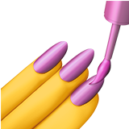
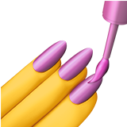
 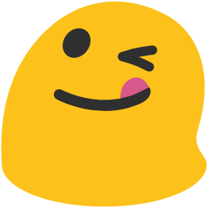
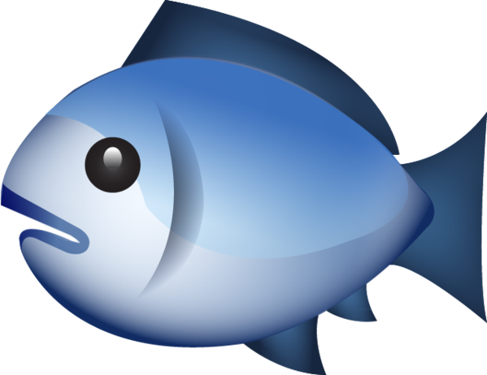
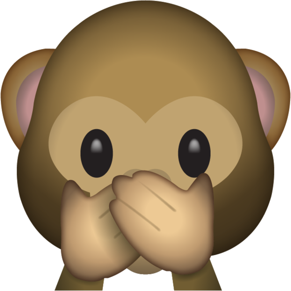
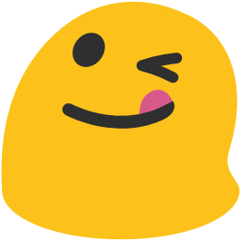
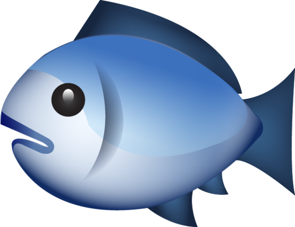
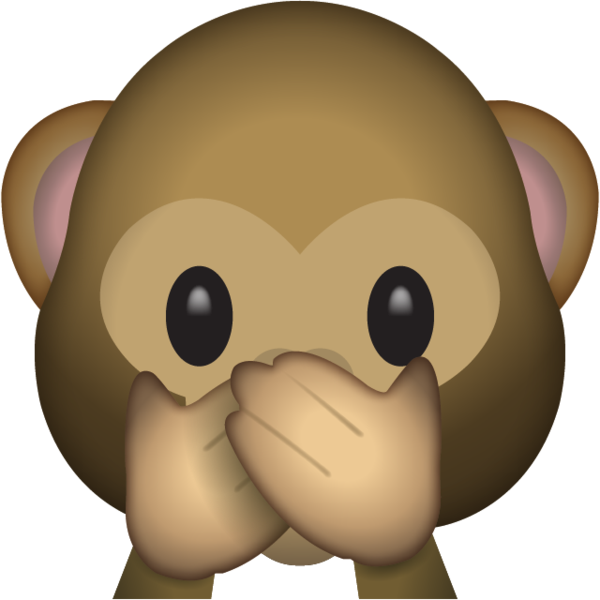
 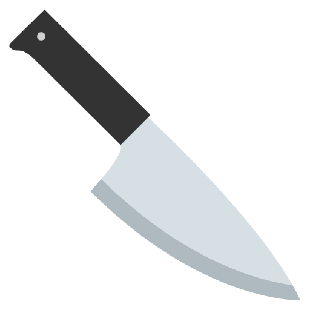
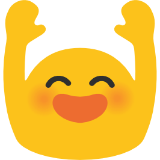
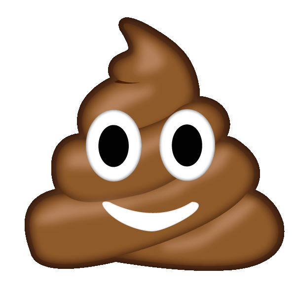
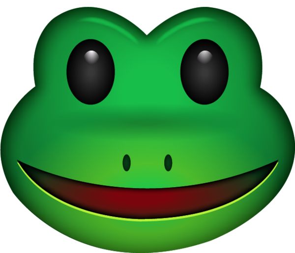
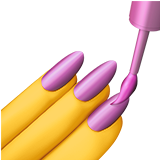
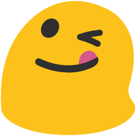
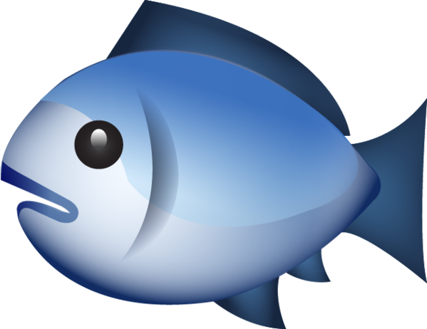
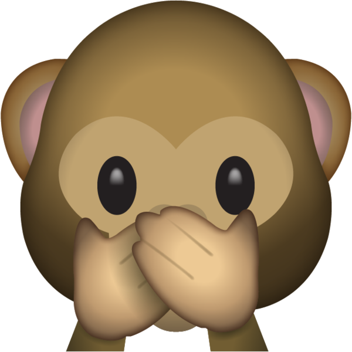
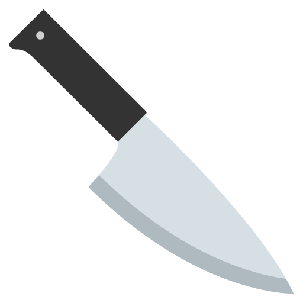
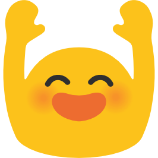
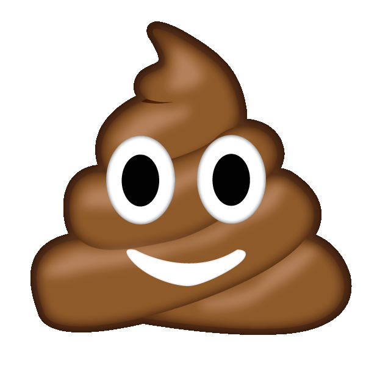
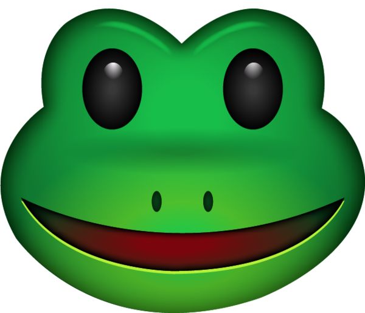
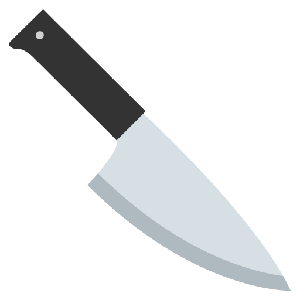
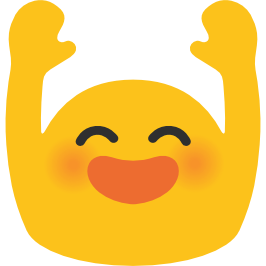
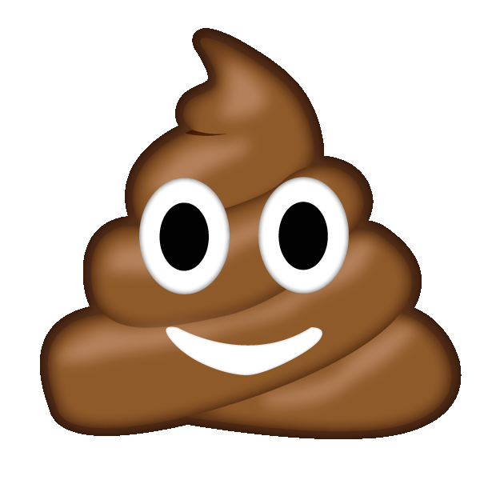
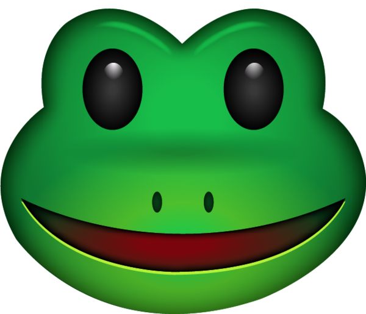
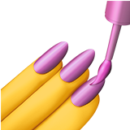
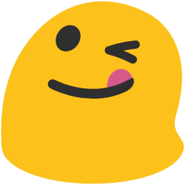
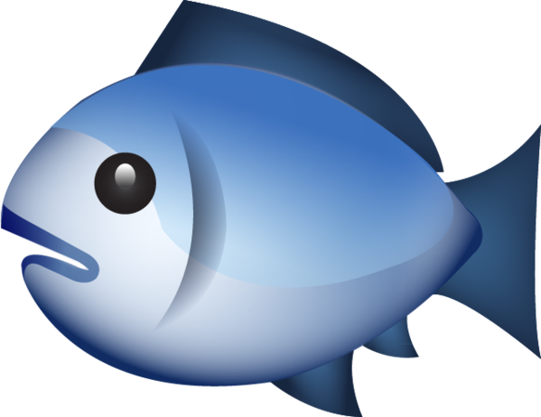
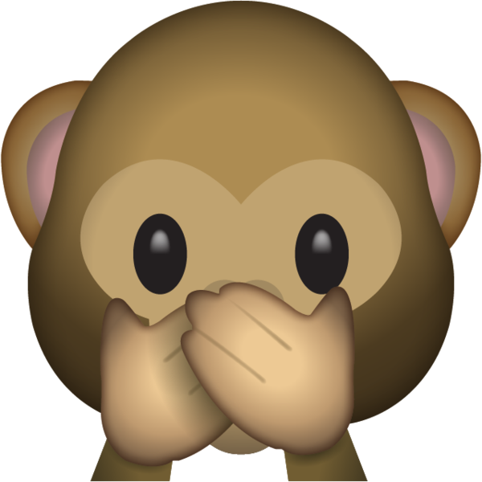
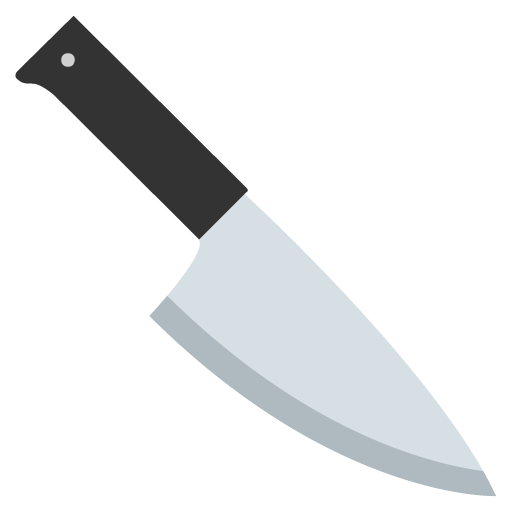
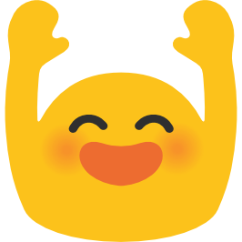
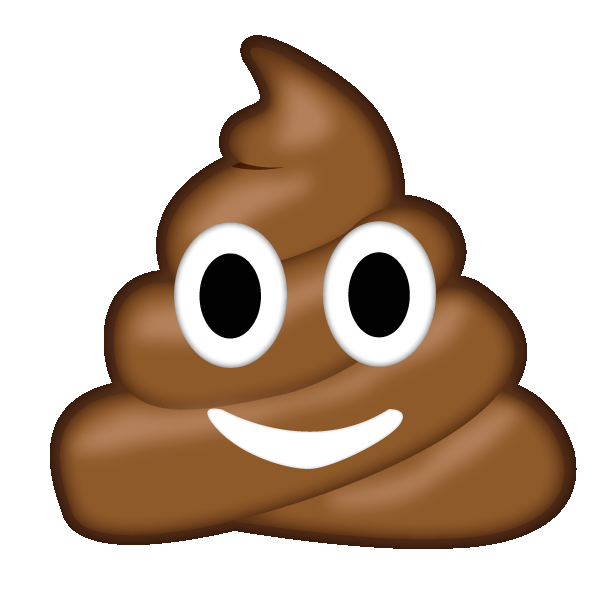
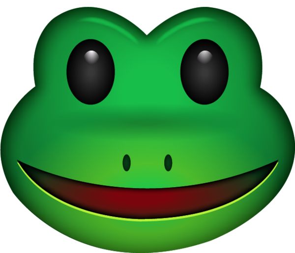
It is said that successful communication is made up of three parts: words choice, tone of voice, and body language. Obviously, when communicating online, two of those elements are eliminated. Emojis let people add nuance to their messages.
Emojis are not to be confused with their predecessors, emoticons or kaomoji. Both emoticons and kaomoji led to the development of the first emojis.
Emoticons are representations of facial expressions formed with keyboard characters such as ;) :) :P used to convey feelings or intended tone. (Although, these days, the distinction between emoticons and emojis is blurred because emoticons are now automatically translated into emojis when you type them into ichat.)
The first emoticons were created after a joke went wrong at Carnegie Mellon University. Someone posted to the computer science online message board about a fake mercury spill but people didn’t realize it was a joke. Dr. Scott E. Fahlman came up with the idea to label jokes and non -jokes with either a smiley face :-) or a frowning face :-(.
In 1986, a japanese version of emoticons, called kaomoji became popular. The larger character set of the Japanese language allowed for more complicated images such as the shruggie ¯\_(ツ)_/¯ These emoticons could be read without having to tilt your head.
☆彡.。.:*・☆彡.。.:*・☆彡.。.:*・☆彡.。.:*・☆彡.。.:*・☆彡.。.:*・☆彡.。.:*・☆彡
Here is a fun and very large database of kaomoji: http://cutekaomoji.com/
★゜・。。・゜゜・。。・゜☆゜・。。・゜゜・。。・゜★゜・。。・゜゜・。。・゜☆゜・。。・゜゜・。。・゜★
The word emoji technically means pictograph and comes from the Japanese e (絵, "picture") + moji (文字, "character"). The first emojis were created in Japan by Shigetaka Kurita in 1999. He was part of a team at NTT DOCOMO (Japanese national carrier, Nippon Telegraph and Telephone) working on a new cell phone interface. He was inspired by symbols from weather forecasts, street signs, emoticons, zapf dingbats, and manga.
These original 176 emojis were each drawn on a 12 x 12 pixel grid. In 2016, the original set was gifted to MOMA and is now part of their collection.
Emojis remained mostly a Japanese convention until 2010 when they were translated into Unicode. Unicode is the computer-industry standard for how individual characters are encoded, so that all fonts, scripts, and emoji are recognizable no matter what device or platform they're sent and received from. Once emojis were part of the Unicode, that meant someone in Japan could send emojis to someone in Canada and the same basic image would display.
These days, the emoji gatekeeper is the Unicode Consortium, a non-profit organization made up of reps from major computer hardware companies, software developers, government ministries, and research institutions who meet several times a year to discuss updates to the Unicode standard, and vote on which new emojis should be added to our ever-expanding pictographic lexicon. Here is a list of all the members of the consortium.
You can combine two or more emojis with a Zero Width Joiner to create a new emoji. The Zero Width Joiner is pronounced “zwidge” and is an invisible Unicode character. Many emojis are actually just combinations of more basic emojis. For example, this “Woman Scientist: Medium Skin Tone” emoji is a combination of the woman, the medium skin tone modifier, and the microscope. A Zero Width Joiner between each character allows them to display as a single unified emoji.
In 2015, Oxford Dictionaries named the “face with tears of joy” emoji as the word of the year. This was the first time a pictograph was ever chosen.
Some emoji are specific to Japanese culture and can get lost in translation:
In January 2017, researchers at the University of Michigan conducted the first large-scale emoji usage study. They analysed over 1.2 billion messages and determined that the Face With Tears of Joy was the most popular emoji. The Heart emoji came in second, and the Heart eyes emoji came in third.
There is a website that lets you see the real time emoji usage on Twitter: http://emojitracker.com/
Although each emoji is in the Unicode, individual vendors (Google, Apple, etc) get to decide how the emojis look on their platforms. If you go to https://emojipedia.org/ you can see what emojis look like across platforms as well as each iteration the emoji has gone through.
Many of Apple’s first emojis were illustrated by a RISD GD grad student (Angela Guzman) in 2008.
In october 2017 there was controversy over Google’s cheeseburger emoji because the cheese was under the burger. People freaked out on Twitter, leading to Google’s CEO, Sundar Pichai, to “drop everything else” he was doing to fix the burger.
Anyone can submit an idea for a new emoji to be voted on by the Unicode Consortium. However, the application guidelines are very strict and specific. It also takes about a year and a half for an emoji to be approved. Here are some reasons proposals are tossed:
The Unicode Consortium was scheduled to have its final meeting in January to pick the new emojis to be released during the later half of 2018. For now, we only know these are the final candidates: http://www.unicode.org/emoji/future/emoji-candidates.html
Some highlights among the 130 finalists:
 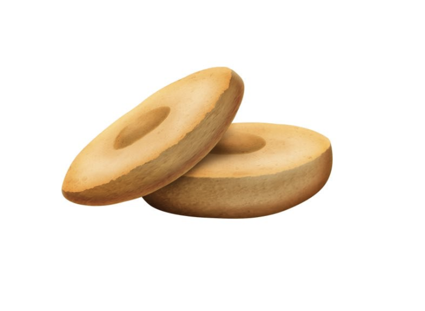
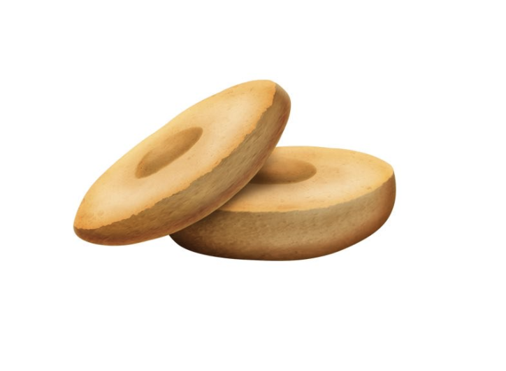
There may also be an update that lets you choose the direction of the emoji:
iPhone X has Animoji, which responds to facial features and creates a 3D animated emoji mimicking your movements. This week Gucci released its own custom Animoji, becoming the first fashion house to do so. The Gucci dog was created specifically for the Lunar New Year (it is the year of the dog).
https://www.thrillist.com/tech/nation/how-new-emojis-are-chosen-who-picks-them https://en.wikipedia.org/wiki/Emoji https://www.nytimes.com/2016/10/27/arts/design/look-whos-smiley-now-moma-acquires-original-emoji.html https://www.npr.org/2017/12/31/574835604/emojis-of-2018-bagels-kangaroos-redheads-are-in-frowning-pile-of-poo-is-out https://www.britannica.com/story/whats-the-difference-between-emoji-and-emoticons https://www.theatlantic.com/technology/archive/2014/05/the-best-way-to-type-__/371351/ https://www.buzzfeed.com/erinchack/the-most-confusing-emojis-defined?utm_term=.jupARkRxVl#.ow4vW0WDm8 https://blog.emojipedia.org/how-do-you-like-your-burger-emoji/ https://medium.com/@agzmn/the-making-of-apples-emoji-how-designing-these-tiny-icons-changed-my-life-16317250a9ee https://www.theverge.com/tldr/2018/1/31/16957446/gucci-app-year-of-the-dog-animoji https://emojipedia.org/zero-width-joiner/ https://emojipedia.org/female-scientist-type-4/